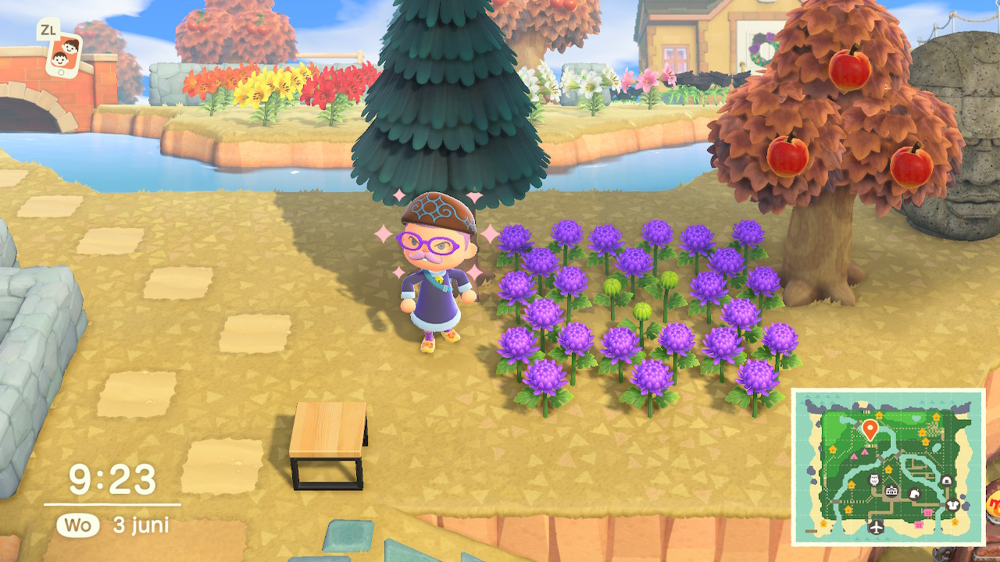
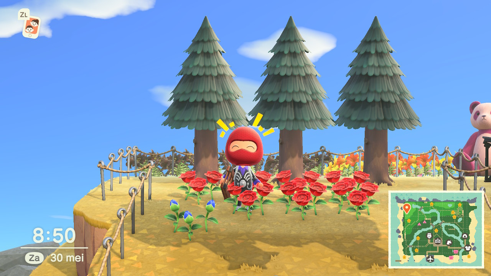

Greetings! The following are some tips from my experience playing Animal Crossing: New Horizons. I haven't read widely into guides published by other people; some of the details that I provide here could well be similar or identical to what other people have already mentioned. I have credited all methods that I learnt from other people, and any uncredited methods and speculations here are my own. (Please credit me properly if you have referenced me; I am Hilário#0435 at Discord.) I strive to be as accurate as possible, but I cannot be held accountable for any inaccuracies, or any errors on your part. The information in this page is tested with update 1.3.0.
Take note of the following concepts, which are repeated throughout this page (people often use different names for these concepts):
Jump to:
In Animal Crossing: New Horizons, there are eight species of flowers that the player can attempt to breed. At the turn of the day, a fully grown flower can breed with another fully grown flower (of the same species) adjacent to them to produce an offspring. The offspring can be in a colour that is different from one or both of its parents. In addition, a flower that does not have a valid breeding partner can self-replicate. This section outlines the methods that I used to create the 'hybrid' flowers, and issues surrounding them.
I am simply outlining the methods that I have used and/or devised; they are not necessarily the best practices (e.g. in some cases, I have since read about better methods), although I do try to point out the pros and cons of them.
There are many methods for achieving the same goal. I don't mind methods with many complicated steps; I prefer methods where I know the genotypes of the offsprings at each step, and with a spawning rate of at least 25% for the desired offsprings at each step. (However, I sometimes have to make do with less controlled methods.) If you just want all the flowers quickly without understanding much of the mechanics involved, consider flowering the ingenious 12x12 Breed All Flowers Layout by J_MASTER (@GigaRoboid). Links of (or links with links of) other types of methods can be found below. I have read a few guides by people associated with the AC Garden Council. (Any errors here are mine.)
(In addition to the eight usual flower species, there are also the lilies of the valley and weeds; they have different mechanisms to the usual flowers, and this section has nothing to say about these two types of plants. Please see other guides for lilies of the valley and weeds; they are both interesting in their own ways.)
When an island is created, the 'native' flower species and the 'sister' flower species are determined. Fully grown flowers of the 'native' species are found on the upper two 'cliff' levels of the player's island at the beginning of the game. The cliff levels are accessible after a few days, after the player has obtained the DIY recipe for a ladder. (Alternatively, a ladder DIY recipe and/or a ladder can be obtained from other players earlier.) On a mystery island tour, flowers of either the native species or the sister species can be encountered.
Seeds of eight species of flowers exist in the game. Seeds of three basic colours are available for each species. The 'seed colours' are white, yellow, and red, except for windflowers, of which the seed colours are white, orange, and red. Two flowers of the same species can breed with each other; the resulting offsprings can have the same or different colour as the parents. Beyond the three basic 'seed colours', each species has three to six extra 'hybrid colours', depending on the species.
The primary ways of obtaining flower seed bags are from the service tent / shop, and from Leif. From the service tent, or from the shop when the shop is built, flower seeds of three species are available: two of them are the native and sister species, while the remaining is a random species that is in season (see, e.g., here for the seasonality of the flowers). At the service tent stage, seeds of one colour of each species are available. At the small shop stage, two colours of each species are available. At the large shop stage, three colours of each species are available.
Leif is a trader that appears after the resident services has been upgraded to a permanent building. Leif was introduced with the 1.2.0 / 23 April 2020 update; in versions 1.2.x of the game, Leif appears during weekdays once per week. With the 1.3.0 / 3 July 2020 update, Leif usually appears once every two weeks. Leif sells flower seeds of two out-of-season species.
Occationally, you can receive seed bags in the mail, or find them in the recycle box at the resident services. If you cannot obtain the types of seeds that you want through the aforementioned methods, then you have to rely on other players for seeds that are sold on their island, or seeds that they are willing to give/sell to you.
Most flower breeding programs begin with flowers grown from seed bags. This is the case as flowers grown from the same type of seeds (i.e. same colour and same species) have the same known genotype, and is thus the most reliable for breeding programs.
Flowers that are on a player's island when the island was first created have the same genes as the seed-bag flowers. However, treat these pre-existing flowers with great caution if you want to use them for breeding programs. The pre-existing flowers are found on the cliff levels, and it takes a few days before the player can access the cliff levels. It SEEMS that it does not rain/snow on the first five or six days when an island is created (totally unverified), and by that time the player should already have access to the cliff levels. Nonetheless, if it rains/snows, then the pre-existing flowers can breed on the following day. If you can reach the flowers on this second day, then you can still tell which are the pre-existing flowers (i.e. safe to use) and which are the offsprings (the offsprings are buds on this day). By the third day, the offsprings are fully grown flowers, like their parents, and you can no longer tell which flowers are the pre-existing flowers and which are the second generation flowers, if they are in the basic colours; they have the same colours, but different genotypes. Don't use any native species flowers on your island if you cannot tell which are the actual pre-existing flowers.
On the other hand, flowers on a mystery-tour island are safe to use in a breeding program. The flowers on a mystery-tour island have the same genotypes as flowers grown from seed bags. The flowers that are on a mystery-tour island do not grow, breed, or self-replicate while they are on the mystery-tour island itslef. (Between the roll-out of the game on 23 March 2020 and update 1.2.0 on 23 April 2020, some mystery-tour islands had hybrid-colour flowers on them. These hybrid-flower islands have since been removed.)
As for flowers from other players' islands, if you are connected using the same WiFi network, or if you are 'best friends' with them, then you can use a spade on their island; you can either go to their island and dig up flowers, or they can plant their flowers on your island. In other cases, you cannot use a spade on other peoples' islands; the flower donor/seller has to come to your island to plant their flowers on your island. Flowers from other people are more often than not not suitable for breeding programs. Firstly, seeing only the colour of the flower is usually not adequate, as flowers of the same colour and species can have many different genotypes. Perhaps most growers do not care about the genotype of their flowers. With people who know at least a bit about ACNH flower genetics, some are not careful enough, and even with careful growers, mistakes can be made. Sometimes no tests are known for distinguishing two flowers with the same phenotype (i.e. colour) but different genotypes. The safest is growing your own flowers from seeds; if you acquire flowers from other people for breeding programs, only use flowers which the grower is 100% confident in saying what their genotypes are.
Remember to transplate flowers with a spade; flowers that are picked by hand do not grow again.
(Some flowers are safe to use in specific ways. When breeding only amongst themselves, two purple flowers of the following species can only produce purple offsprings: pansies, windflowers, hyacinths, tulips. Blue roses breeding with each other only produce blue roses. The following flowers have only one possible genotype: blue roses are 2220; gold roses are 0000 (but note that gold roses do not self-replicate or breed with each other); pink hyacinths and pink tulips are 101. The following flowers have only two possible genotypes: black lilies (200 or 210), black cosmos (220 or 221), green mums (220 or 221), orange hyacinths (110 or 120), blue hyacinths (002 or 210), orange tulips (110 or 120), black tulips (200 or 210).)
Flowers can produce offsprings at a turn of the day. At the turn of the day, the game checks on each flower in a random order. Each flower has its own probability of reproducing. If it has been selected to reproduce that day, it will spawn an offspring if it meets all the following conditions:
A flower that has been selected for reproducing will first seek to breed with a flower in the eight adjacent tiles on the same level. It can only breed with that other flower if they are of the same species, and if that other flower has not already bred with another flower during that turn of the day. If there are no valid partners in the surrounding eight tiles, the flower will self-replicate (provided that all other conditions listed above are met).
When the reproduction conditions are met, the base probability of a flower being picked by the game to reproduce is 5%. The probability increases with each watering day after four watering days without offpsrings. Bonus probability is added to a flower that has been watered by players visiting from other islands, up to five watering players for a given flower, and only the watering done by the first ten watering visitors in a day counts. The probability is reset back to 5% if the flower produces an offsprings, or if it is dug up. See other guides on the exact mechanisms involved with this spawn probability.
(The reproduction probability that a flower has is not influenced by the total number of flowers on an island. Having more flowers elsewhere on your island does not affect the reproduction rate of a flower, unless, e.g., there are too many spawning flowers in the vicinity taking up all the possible spawning spaces that a flower needs for its own offsprings.)
I benifited greatly from Paleh's ACNH Flower Genetics Guide, which was updated with the complete flower genetics datamined by Aeter, outlined in Aeter's ACNH Flower Research page. I suggest looking through these two resources, and also the links therein. Also very useful are, e.g., AeonSake's Flower Breeding Simulator, and Yue's ACNH garden guides. With the breeding methods below, some of them I have simply followed Paleh's methods, and others I have devised myself, calculated from the complete gene tables.
When a flower self-replicates, the offpsring has the same genes as the parent. When two flowers breed with each other, each parent contribute one allele form each allele pair. Roses have four allele pairs, while other flowers have three allele pairs. Aeter labels the allele pairs G1, G2, G3, and G4, with G4 being the extra allele pair that roses have. An alternative nomenclature for the allele pairs are R, Y, W, and B or S respectiely. Paleh lables the alleles Rr, Yy, Ww, and Ss, with the three-allele-pair flowers having either RYW or RYS genes. Each allele is coded in the game as binary 0 or 1, and the allele pairs are coded as 00, 01, or 11. (If a 0 and a 1 is passed on, the resulting allele pair is recorded as 01, never 10.) Using Paleh's nomenclature, 1 is dominant and 0 is recessive for Rr, Yy, and Ss, while 0 is dominant and 1 is recessive for Ww. According to Paleh, in parts of the game code, the allele pairs are additionally recorded in ternary codes of 0, 1, or 2:
This ternary code is used extensively as a short-hand for the flower genotypes. Roses are described using a string of four ternary numbers for their four allele pairs, e.g. blue roses are 2220, which is the equivalent of binary 11 11 11 00, or Paleh's RR YY ww ss. Other flowers are described using a string of three ternary numbers for their three allele pairs, e.g. green mums are either 220 or 221.
For a given allele pair, based on the parent's allele pairs, the offspring can have the following allele pairs (parent and parent: offpsring):
As can be inferred, having two pink 1111 roses breeding with each other is the most chaotic scenario possible, with all 81 genotypes (3*3*3*3) being possible outcomes. Exactly one of them is the blue rose 2220, at a probability of 1/(4*4*4*4) = 0.390625%.
There are multiple paths for breeding a particular hybrid flower. Some hybrid flowers can be very easily obtained, while some are very difficult, with the blue rose being the hardest to breed.
In relation to her typology of the blue rose methods, Yue classifies the blue rose methods into 'genepool methods' versus 'methodical paths'. 'Genepool methods' involve the breeding of flowers within a known range of genotypes. However, there is no testing to see which particular genotype a flower has, and only flowers of some genotypes within the range have a chance of spawning the desired offspring. While this is rather uncontrolled, with a large number of breeding pairs, the time that it takes can be not very long.
'Methodical paths' involve programs where the genotypes of the offsprings, and the probability that each type will spawn, are known. With this type of programs, I make a distinction between '(controlled) mass breeding' versus 'selective breeding":
(Using this nomenclature, 'genepool methods' would be 'semi-controlled mass breeding'.)
Elements of these two types of approaches are not mutually exclusive; mass-breeding-type programs often involve a small number of steps, and selective-breeding-type programs also benefit from having more participants in each step. I prefer selective breeding: I like the relative certainty, and I like to increase the chance of getting hybrid flowers to ideally at least 25%. (However, having complicated breeding programs also increases the chance of error; a high level of caution is needed at each step.) I use selective breeding methods if I can formulate one, or if one is known to me. Sometimes there is an excess of output at a particular step, and often they can be set aside for mass breeding concurrently. (Sometimes, through chance, the desired hybrid spawned quicker in the mass-breeding field, but I always follow through my selective-breeding programs.) With black cosmos, I used what can be called a 'funnelled genepool method'; I don't test the genotype of the orange cosmos parents, but I 'gene-funnel' them to gradually 'improve' the genes of the orange cosmos offsprings, which I feed back into the mass-breeding area, theoratically raising the probability of spawning black cosmos to 25%.
The following are the methods that I used for each species of flowers.
ユリ / lirios / lys / Lilien / gigli / lelies / лилии / 백합 / 百合 / 百合
Lilies are the easiest. The seed-bag flowers are: seed white (002), seed yellow (020), and seed red (201). There are three hybrid colours: orange, black, and pink. The selling prices in bells are: 40 for white, yellow, red; 80 for orange, black, pink.
Orange lilies can be obtained from a seed yellow plus a seed red.
parents: seed yellow 020, seed red 201 offsprings: orange 110 (50%), yellow 111 (50%)
Black and pink lilies can be obtained from a seed red plus a seed red.
parents: seed red 201, seed red 201 offsprings: black 200 (25%), seed red 201 (50%), pink 202 (25%)
Red offsprings of two seed red 201s are also seed red 201s, and can be used again for this method. Two black 200s breeding with each other can only result in black 200s, and two pink 202s breeding with each other can only result in pink 202s. (But cloning the black and pink lilies would be quicker if you want more of them.)
An alternative method for obtaining pink lelies is mixing a seed white with a seed red.
parents: seed white 002, seed red 201 offsprings: pink 101 (50%), white 102 (50%)
Two pink 101s breeding with each other results in the following offsprings: red (25%), pink (31.25%), white (37.5%), or black 200 (6.25%).
コスモス / cosmos / cosmos / Kosmeen / cosmee / cosmea / космеи / 코스모스 / 波斯菊 / 波斯菊
The seed-bag flowers are: seed white (001), seed yellow (021), and seed red (200). There are three hybrid colours: pink, orange, and black. The selling prices in bells are: 40 for white, yellow, red; 80 for pink, orange; 240 for black.
Pink cosmos can be obtained from a seed white plus a seed red.
parents: seed white 001, seed red 200 offsprings: pink 100 (50%), pink 101 (50%)
Orange cosmos can be obtained from a seed yellow plus a seed red.
parents: seed yellow 021, seed red 200 offsprings: orange 110 (50%), orange 111 (50%)
Black cosmos can be obtained by breeding two orange cosmos. In the preceding step of mixing a seed yellow with a seed red, two types of orange cosmos are produced: orange 110 and orange 111 (they look identical). The spawn rate for black cosmos offsprings is very low for both orange 110 and orange 111 (see table below). Mass breeding orange cosmos is unavoidable. However, it is possible to 'improve' on the genes of the orange cosmos that are fed into the orange cosmos mass breeding field.
In a mass-breeding field of orange cosmos, two orange 110s, or one orange 110 plus one orange 111, can produce orange offsprings 50% of the time. Two orange 111s can produce orange offsprings 40.625% (13/32) of the time. The orange offsprings can have various genotypes. There are seven possible orange cosmos genotypes, and two orange 111s are capable of having offsprings with any of the seven orange cosmos genotypes. There is a hierarchy amongst them for their spawn rate of black cosmos offsprings: 111 < 110 < 122 < [121/211] < [120/210], with 111 being the worst, and 120/210 being the best (with the exception that two 122s cannot spawn black cosmos). 122, 121, and 120 are relatively rare. The following are the probabilities of black offsprings when two orange cosmos breed with each other.
| 111 | 110 | 122 | 121/211 | 120/210 | |
|---|---|---|---|---|---|
| 111 | 4.6875% | 6.25% | 6.25% | 9.375% | 12.5% |
| 110 | 6.25% | 6.25% | 12.5% | 12.5% | 12.5% |
| 122 | 6.25% | 12.5% | 0% | 12.5% | 25% |
| 121/211 | 9.375% | 12.5% | 12.5% | 18.75% | 25% |
| 120/210 | 12.5% | 12.5% | 25% | 25% | 25% |
Adding orange offsprings from an orange mass-breeding field directly back into the mass-breeding field will move the 'quality' of the genepool up and down uncontrollably. Having 'better' orange genotypes not only raises the spawn rate for black cosmos, it also improve the chances of having 'better' genotypes amongst its orange offsprings. Instead of just having a single field of orange cosmos mass-breeding uncontrollably, I have both a mass-breeding area, and a separate area where I try to increase the number of orange 211s and orange 210s, before I move them back into the mass-breeding area. I call this the 'gene funnelling' area. From the initial step of mixing a seed yellow and a seed red, the orange 110 and 111 offsprings are taken to a separate gene funnelling area to breed with a seed red 200. I then wait for the orange and red cosmos to produce an orange offspring, before I move the orange parent to the mass-breeding area. The process is then repeated, with any orange offsprings in the gene-funnelling area AND the mass-breeding area fed back to the gene-funnelling area. The spawn rate of orange cosmos offsprings in the gene-funnelling area is at least 50%, and in the mass-breeding area at least 40.625%.
With orange 111, 110, 211, or 210, breeding one of them against a seed red 200 produces an orange offspring 50% of the time. The resulting orange offspring will have the same genes as its orange parent, or have 'better' genes than its orange parent: 111 produces 111, 110, 211, or 210; 110 produces 110 or 210; 211 produces 211 or 210, 210 produces 210 (each of them at equal probability within each set). In other words, 50% or 75% of the time the orange offspring has 'better' genes than the orange parent, until an orange 210 is achieved.
With orange 122, 121, or 120, breeding one of them against a seed red 200 produces an orange offspring 100% of the time. Half of them will have improved genes (211 or 210), while half of them will have less optimal genes (111 or 110). However, 122, 121 and 120 are relatively rare: they can only appear as new buds in the mass-breeding area and not the gene-funnelling area (breeding orange cosmos with a seed red 200 does not produce 122/121/120), and having a larger number of initial orange 111s and orange 110s also keep the percentage of 122, 121, and 120s in the mass-breeding area relatively low. Even if 111s or 110s are produced by 122s/121s/120s, the new 111s or 110s can quickly produce better orange offsprings in the gene-funnelling area.
As seen in the explanations above, the gene-funnelling area leads to more and more orange 210 offsprings, and having more orange 210 offsprings in the mass-breeding area increases the chance of spawning black cosmos to 25%. The orange offsprings from two orange 210s are all orange 210s.
(To a degree, one could passively tell whether an orange cosmos has the 11x, 12x, or 21x genotype in the gene-funnelling area: with a seed red 200, orange 11x produces pink (25%), red (25%), or orange (50%) offsprings; orange 21x produces red (50%) or orange (50%) offsprings; 12x only produces orange offsprings. Seeing pink offsprings proves that an orange cosmos is a 11x; seeing red offsprings but no pink offsprings strongly suggests (but does not prove) that an orange cosmos is a 21x; seeing only orange offsprings strongly suggests that an orange cosmos is a 12x.)
キク / crisantemos / chrysanthèmes / Chrysanthemen / crisantemi / chrysanten / хризантемы / 국화 / 菊花 / 菊花
The seed-bag flowers are: seed white (001), seed yellow (020), and seed red (200). There are three hybrid colours: pink, purple, and green. The selling prices in bells are: 40 for white, yellow, red; 80 for pink, purple; 240 for green.
This is my method for obtaining green mums. During the process, pink and purple mums are also obtained at Step 2.
Step 1 is mixing a seed yellow with a seed red.
Step 1 parents: seed yellow 020, seed red 200 offsprings: yellow 110 (100%)
Obviously, don't mix up the offspring yellow 110 with the parent seed yellow 020. You don't need many yellow 110s from Step 1, as more yellow 110s (and seed red 200s) will be produced in the next Step 2.
Step 2 is mixing the resulting yellow 110 with another seed red.
Step 2 parents: yellow 110, seed red 200 offsprings: pink 100 (25%), yellow 110 (25%), seed red 200 (25%), purple 210 (25%)
In this Step 2, you also get pink 100 mums. The yellow offsprings are all yellow 110s, and can be fed back into this Step 2. The red offsprings in this Step 2 and the following Step 3 are seed red 200s, and can be fed back into Steps 1 or 2 if needed.
Step 3 is mixing two purple 210s.
Step 3 parents: purple 210, purple 210 offsprings: seed red 200 (25%), purple 210 (50%), green 220 (25%)
The purple offsprings in this Step 3 are the same as the parent purple 210, and they can be fed back into Step 3 to produce more purple 210s and green 220s. The seed red 200 offsprings can be fed back into Steps 1 or 2. Two green 220s breeding with each other can only result in green 220s. (But cloning the green 220s would create more green 220s quicker than breeding the green 220s.)
Paleh and PeachNKey / cestislife provide alternative Steps 2 and 3:
Step 2 parents: yellow 110, yellow 110 offsprings: white 000 (6.25%), yellow 010/020/110 (43.75%), pink 100 (12.5%), purple 120/210 (25%), seed red 200 (6.25%), green 220 (6.25%)
Step 3 parents: purple 120/210, purple 120/210 offsprings: purple 120/210 (50%), green 220 (25%), [yellow 020/110/red 200] (25%)
The advantage of their method is that there is already a chance of green mums appearing at Step 2. The disadvantage is that the genotypes of the purple and yellow offsprings cannot be easily determined; in particular, the yellow offsprings cannot be fed back into the program without testing.
We have seen that pink 100s can spawn in Step 2 in both methods. An alternative pathway for pink mums is mixing seed white 001 with seed red 200: the offsprings are pink 100 (50%) or pink 101 (50%). (Two pink 10x's breeding with each other produces pink mums 50% of the time, all of which are 10x's.)
We have seen that purple mums can spawn in Steps 2 and 3 in both methods above. An alternative pathway for purple mums is mixing two seed white 001s: the offsprings are white 000 (25%), seed white 001 (50%), or purple 002 (25%). Purple 002 can also be produced by two pink 101/102. However, take note that this purple 002 from the white or pink mum methods cannot produce green mums when bred with each other, unlike the purple 210s/120s from either of the green mum methods.
パンジー / violas / pensées / Veilchen / viole / viooltjes / фиалки / 팬지 / 三色堇 / 三色堇
The seed-bag flowers are: seed white (001), seed yellow (020), and seed red (200). There are three hybrid colours: orange, blue, and purple. The selling prices in bells are: 40 for white, yellow, red; 80 for orange, blue; 240 for purple.
Pansies are multi-colour flowers; the colour labels for pansies refer to the outermost colour of a pansy, with the exception that 'orange' refers to a pansy that has a red outer ring surrounding a yellow ring. (In the Japanese version of the game, the colour of the orange pansy is called あか きいろ aka kiiro 'red yellow', instead of the usual オレンジ orenji 'orange' for the orange flowers of other species.)
The genotypes of the six colours of pansies have direct correspondences with the six colours of windflowers (next section). In other words, methods for breeding hybrid pansies can also be used for the corresponding hybrid windflowers, and vice versa. The following are the genotype–phenotype correspondences between pansies and windflowers.
| pansies | windflowers | |
|---|---|---|
| 000, 001 (seed) | white | white |
| 002, 012, 102 | blue | blue |
| 010, 011, 020 (seed), 021, 022, 120, 121, 122 | yellow | orange |
| 100, 101, 200 (seed), 201, 210, 211 | red | red |
| 110, 111, 112, 220, 221 | orange | pink |
| 202, 212, 222 | purple | purple |
The following is my method for breeding purple pansies. During the process, blue pansies and orange pansies are also obtained.
Step 1 is mixing two seed whites.
Step 1 parents: seed white 001, seed white 001 offsprings: white 000 (25%), seed white 001 (50%), blue 002 (25%)
Blue 002s are needed for both Steps 2 and 3.
Step 2 is mixing the resulting blue 002 with a seed red.
Step 2 parents: blue 002, seed red 200 offsprings: red 101 (100%)
Absolutely prevent the possibility of the seed red 200 self-replicating, lest it get mistaken with the intended red 101 offspring. Any excess red 101s can be used for mass-breeding somewhere else, with the spawn rate of purple 202s being 6.25%. More red 101s will also spawn in the following Step 3; they can be fed back into Step 3, or into the red 101 mass-breeding field.
Step 3 is breeding the resulting red 101 with another blue 002 (from Step 1).
Step 3 parents: blue 002, red 101 offsprings: seed white 001 (25%), BAD blue 002 (25%), red 101 (25%), GOOD blue 102 (25%)
There are two types of blue offsprings from Step 3: 'bad' blue 002 and 'good' blue 102. They look identical, but their genotypes can be tested by breeding them with seed yellow 020s in a separate area. With the 'bad' blue 002, the only possible offsprings are yellow 011; with the 'good' blue 102, half of the offsprings are yellow 011, and half of the offsprings are orange 111.
Test 3 parents: blue 002 (bad), seed yellow 020 offsprings: yellow 011 (100%)
Test 3 parents: blue 102 (good), seed yellow 020 offsprings: yellow 011 (50%), orange 111 (50%)
The appearance of any orange offsprings in this test proves that the blue pansy testee is a 'good' blue 102. If none of the first four offsprings are orange, then the chance that this blue pansy testee is a 'good' 102 is too low, and should be removed from the breeding program. (Note that a lack of orange offsprings is NOT a prove that it is a 'bad' blue 002! So don't feed this blue pansy back to Steps 2 or 3.) (If an offspring in Test 3 is blue, then your testing layout is suboptimal and the blue pansy has self-replicated. Nonetheless, you can feed this replicated blue pansy back into Test 3, and note VERY CAREFULLY which two blue pansy testees are equivalents.) Feed the 'good' blue 102s into the following Step 4, which involves mixing 'good' blue 102s. At least two 'good' blue 102s are needed; either have two 'good' blue 102s from Test 3, or have one 'good' blue 102 trasplanted somewhere else and have it self-replicate.
Step 4 parents: blue 102, blue 102 offsprings: blue 002 (25%), blue 102 (50%), purple 202 (25%)
If needed, any blue offsprings from Step 4 can be fed back to Test 3 for more 'good' blue 102s, which can then be fed back into Step 4.
A purple 202 breeding with another purple 202 can only result in purple 202s. (But cloning the purple 202 pansies would create more purple pansies quicker.)
Orange pansies can be obtained through Test 3 above (orange 111). There is another easier method for obtaining orange pansies: seed yellow 020 plus seed red 200 always result in orange 110s.
アネモネ / anémonas / anémones / Anemonen / anemoni / anemonen / ветреницы / 아네모네 / 银莲花 / 銀蓮花
The seed-bag flowers are: seed white (001), seed orange (020), and seed red (200). There are three hybrid colours: pink, blue, and purple. The selling prices in bells are: 40 for white, orange, red; 80 for pink, blue; 240 for purple. Unlike other flowers, the basic seed colours for windflowers are white, orange, red instead of white, yellow, red; there are no yellow windflowers.
The genotypes of the six colours of windflowers have direct correspondences with the six colours of pansies (previous section). In other words, methods for breeding hybrid windflowers can also be used for the corresponding hybrid pansies, and vice versa. The following are the genotype–phenotype correspondences between the pansies and windflowers.
| pansies | windflowers | |
|---|---|---|
| 000, 001 (seed) | white | white |
| 002, 012, 102 | blue | blue |
| 010, 011, 020 (seed), 021, 022, 120, 121, 122 | yellow | orange |
| 100, 101, 200 (seed), 201, 210, 211 | red | red |
| 110, 111, 112, 220, 221 | orange | pink |
| 202, 212, 222 | purple | purple |
I knew this direct correspondence between pansies and windflowers too late, and ended up devising a rather complicated method for obtaining hybrid windflowers. I outline the windflower equivalent of the aforementioned pansy method as method 1 below (I have never tried this), and my complicated windflower method as method 2 below.
Step 1 is mixing two seed whites.
Step 1 parents: seed white 001, seed white 001 offsprings: white 000 (25%), seed white 001 (50%), blue 002 (25%)
Blue 002s are needed for both Steps 2 and 3.
Step 2 is mixing the resulting blue 002 with a seed red.
Step 2 parents: blue 002, seed red 200 offsprings: red 101 (100%)
Absolutely prevent the possibility of the seed red 200 self-replicating, lest it get mistaken with the intended red 101 offspring. Any excess red 101s can be used for mass-breeding somewhere else, with the spawn rate of purple 202s being 6.25%. More red 101s will also spawn in the following Step 3; they can be fed back into Step 3, or into the red 101 mass-breeding field.
Step 3 is breeding the resulting red 101 with another blue 002 (from Step 1).
Step 3 parents: blue 002, red 101 offsprings: seed white 001 (25%), BAD blue 002 (25%), red 101 (25%), GOOD blue 102 (25%)
There are two types of blue offsprings from Step 3: 'bad' blue 002 and 'good' blue 102. They look identical, but their genotypes can be tested by breeding with seed orange 020s in a separate area. With the 'bad' blue 002, the only possible offsprings are orange 011; with the 'good' blue 102, half of the offsprings are orange 011, and half of the offsprings are pink 111.
Test 3 parents: blue 002 (bad), seed orange 020 offsprings: orange 011 (100%)
Test 3 parents: blue 102 (good), seed orange 020 offsprings: orange 011 (50%), pink 111 (50%)
The appearance of any pink offsprings in this test proves that the blue windflower testee is a 'good' blue 102. If none of the first four offsprings are pink, then the chance that this blue windflower testee is a 'good' 102 is too low, and should be removed from the breeding program. (Note that a lack of pink offsprings is NOT a prove that it is a 'bad' blue 002! So don't feed this blue windflower back to Steps 2 or 3.) (If an offspring in Test 3 is blue, then your testing layout is suboptimal and the blue windflower has self-replicated. Nonetheless, you can feed this replicated blue windflower back into Test 3, and note VERY CAREFULLY which two blue windflower testees are equivalents.) Feed the 'good' blue 102s into the following Step 4, which involves mixing 'good' blue 102s. At least two 'good' blue 102s are needed; either have two 'good' blue 102s from Test 3, or have one 'good' blue 102 trasplanted somewhere else and have it self-replicate.
Step 4 parents: blue 102, blue 102 offsprings: blue 002 (25%), blue 102 (50%), purple 202 (25%)
If needed, any blue offsprings from Step 4 can be fed back to Test 3 for more 'good' blue 102s, which can then be fed back into Step 4.
A purple 202 breeding with another purple 202 can only result in purple 202s. (But cloning the purple 202 windflowers would create more purple windflowers quicker.)
Pink windflowers can be obtained through Test 3 above (pink 111). There is another easier method for obtaining pink windflowers: seed orange 020 plus seed red 200 always result in pink 110s.
Step 1 is mixing a seed white with a seed red
Step 1 parents: seed white 001, seed red 200 offsprings: BAD red 100 (50%), GOOD red 101 (50%)
You only need very few red offsprings from Step 1, as red 100s and red 101s will keep on turning up in the following Test 1a. (In Step 1, make sure that there is no chance of the parent seed red 200 self-replicating.)
Next are two tests, Test 1a and Test 1b. In Test 1a, the red offsprings from Step 1 are tested against seed white 001s: 'bad' red 100s only produce red or white offsprings, whereas 'good' red 101s produce red, white, or blue offsprings.
Test 1a parents: seed white 001, red 100 (bad) offsprings: white 000 (25%), seed white 001 (25%), BAD red 100 (25%), GOOD red 101 (25%)
Test 1a parents: seed white 001, red 101 (good) offsprings: white 000 (12.5%), seed white 001 (25%), BAD blue 002 (12.5%), BAD red 100 (12.5%), GOOD red 101 (25%), GOOD blue 102 (12.5%)
Any red offsprings in Test 1a can be fed back into Test 1a. (Up until a point when you decide that... there are too many red windflowers. I stopped when I optained my first purple windflower.) If none of the first eight offsprings are blue, then the chance that a red windflower is a 'good' red 101 is too low, and it is best to remove that red windflower from the breeding program. Red windflowers that have produced any blue offsprings in Test 1a are 'good' red 101s, and can be kept in the testing ground for more blue offsprings.
Blue offsprings from Test 1a progress to Test 1b. In Test 1b, the blue offsprings from Test 1a are tested against seed orange 020s: 'bad' blue 002s only produce orange offsprings, whereas 'good' blue 102s produce orange or pink offsprings.
Test 1b parents: seed orange 020, blue 002 (bad) offsprings: orange 011 (100%)
Test 1b parents: seed orange 020, blue 102 (good) offsprings: orange 011 (50%), pink 111 (50%)
If none of the first four offsprings are pink, then the probability that a blue windflower is a 'good' 102 is too low, and it is best to remove that blue windflower from the breeding program. 'Good' blue 102s from Test 1b progress to Step 2, which involves mixing blue 102s.
Step 2 parents: blue 102, blue 102 offsprings: BAD blue 002 (25%), GOOD blue 102 (50%), purple 202 (25%)
If needed, any blue offsprings from Step 2 can be fed back to Test 1b for more 'good' blue 102s, which can then be fed back into Step 2 for more purple 202s.
Purple 202 breading with another purple 202 will only result in purple 202s. (But cloning the purple 202 windflowers would create more purple windflowers quicker.)
Pink windflowers can be obtained through Test 1b above (pink 111). There is another easier method for obtaining pink windflowers: seed orange 020 plus seed red 200 always result in pink 110s.
ヒヤシンス / jacintos / jacinthes / Hyazinthen / giacinti / hyacinten / гиацинты / 히아신스 / 风信子 / 風信子
The seed-bag flowers are: seed white (001), seed yellow (020), and seed red (201). There are four hybrid colours: pink, orange, blue, and purple. The selling prices in bells are: 40 for white, yellow, red; 80 for pink, orange, blue; 240 for purple.
The breeding of hyacinths and tulips (next section) are highly similar, but not identical.
Step 1 is mixing a seed yellow 020 with a seed red 201.
parents: seed yellow 020, seed red 201 offsprings: orange 110 (50%), yellow 111 (50%)
Obviously, make sure that the yellow 111 offsprings are not mistaken with the parent seed yellow 020.
Both orange 110s and yellow 111s can be put into mass-breeding fields for purple hyacinth offsprings, with all three combinations (110–110, 110–111, 111–111) having a spawn rate of purple offsprings at 6.25% (1/16). Although an orange 110 plus a yellow 111 can also produce purple offsprings, I highly recommend that you put the orange 110s and yellow 111s into separate mass-breeding fields (otherwise it would be very difficult to keep track of things).
In both the orange and the yellow mass-breeding fields, any orange offsprings can be added to the orange mass-breeding field.
On the other hand, any yellow offsprings from either the orange or the yellow mass-breeding field should be removed from the breeding program, as many of them have genes that will not lead to purple hyacinths.
Orange 120 is better than orange 110 in terms of spawn rate of purple hyacinths:
You can 'gene-funnel' the orange hyacinths to increase the percentage of orange 120s: breed an orange hyacinth against a seed yellow 020 in a separate area, and move the orange hyacinth back to the mass-breeding area only after it has produced an orange offspring, and repeat the process. However, this is probably not needed, unlike the situation with breeding black cosmos (see above). With the breeding of black cosmos, the 'quality' of genes amongst the orange cosmos offsprings in an orange cosmos mass-breeding field fluctuates; it makes sense to gene-funnel them to increase the percentage of 'higher quality' orange cosmos. With the breeding of purple hyacinths, the 'quality' of genes amongst the orange hyacinths does not go down: orange 110s can have 110 or the 'better' 120 offsprings, but two orange 120s cannot have the 'worse' orange 110 offsprings. It is probably not worth taking the orange hyacinths one or more days away from the mass-breeding field for gene-funnelling. Nonetheless, it is perhaps useful to know that this gene-funnelling method exists if you are extremely unlucky with spawning purple hyacinths in the orange mass-breeding field.
Blue hyacinths can spawn in the orange mass-breeding field. Two orange 110s, or one orange 110 plus one orange 120, spawn blue hyacinths at a rate of 12.5%. (On the other hand, two orange 120s cannot spawn blue hyacinths; this is another reason against artificially increasing the percentage of orange 120s through gene-funnelling.) The Blue hyacinths that spawn in the orange mass-breeding field spawn purple 220s at a rate of 25%:
parents: blue 210, blue 210 offsprings: red 200 (25%), blue 210 (50%), purple 220 (25%)
Any blue hyacinth offspring from this step can be used for breeding more blue 210s and purple 220s.
(On the other hand, blue hyacinths that spawn in the yellow mass-breeding field can be either blue 210 or blue 002, and hence it is best not to use blue hyacinths from the yellow mass-breeding field, if the purpose is to breed purple hyacinths.)
If you care about the genotypes of the purple hyacinths, purple hyacinths from two orange hyacinth parents are purple 210s; purple hyacinths from one orange hyacinth and one yellow hyacinth 111 can be purple 210s or 211s; purple hyacinths from two yellow hyacinth 111 parents can be purple 210s, 211s, or 212s. Any purple hyacinths breeding with each other only result in purple hyacinths.
(Disclaimer: so far I have not tried this purple hyacinth method that I have devised, but I have tested the near-identical purple tulip method described below. When I first started with hyacinths, I had extreme luck and obtained purple and blue hyacinths from a very small number of random hyacinths very early on. Thereafter, the number of hyacinths grew uncontrollably. After devising this purple hyacinth method, there was already no space left on my island to test this purple hyacinth method...)
Blue hyacinths can be obtained through mass-breeding orange 110/120s or mass-breeding yellow 111s during the process of obtaining purple hyacinths (see above). An easier method for obtaining blue hyacinths is breeding two seed white 001s:
parents: seed white 001, seed white 001 offsprings: white 000 (25%), seed white 001 (50%), blue 002 (25%)
However, this blue 002 cannot spawn purple hyacinths when bred with each other, unlike the blue 210 which can be obtained from orange hyacinths (see above).
Pink hyacinths can be obtained by mixing a seed white with a seed red.
parents: seed white 001, seed red 201 offsprings: red 100 (25%), pink 101 (50%), white 102 (25%)
Alternatively, pink hyacinths can also appear in a mass-breeding field of yellow 111s (see above): two yellow 111s spawn pink 101 at 6.25%. An orange 110 mixing with a yellow 111 also spawn pink 101 at 6.25%.
All pink hyacinths are pink 101. Two pink 101s breeding with each other results in the following offsprings: red (37.5% = 3/8), pink 101 (25%), white (31.25% = 5/16), blue 002 (6.25% = 1/16).
チューリップ / tulipanes / tulipes / Tulpen / tulipani / tulpen / тюльпаны / 튤립 / 郁金香 / 鬱金香
The seed-bag flowers are: seed white (001), seed yellow (020), and seed red (201). There are four hybrid colours: pink, orange, black, and purple. The selling prices in bells are: 40 for white, yellow, red; 80 for pink, orange, black; 240 for purple.
The breeding of tulips and hyacinths (preceding section) are highly similar, but not identical.
Step 1 is mixing a seed yellow 020 with a seed red 201.
parents: seed yellow 020, seed red 201 offsprings: orange 110 (50%), yellow 111 (50%)
Obviously, make sure that the yellow 111 offsprings are not mistaken with the parent seed yellow 020.
Both orange 110s and yellow 111s can be put into mass-breeding fields for purple tulip offsprings, with all three combinations (110–110, 110–111, 111–111) having a spawn rate of purple offsprings at 6.25% (1/16). Although an orange 110 plus a yellow 111 can also produce purple offsprings, I highly recommend that you put the orange 110s and yellow 111s into separate mass-breeding fields (otherwise it would be very difficult to keep track of things).
In both the orange and the yellow mass-breeding fields, any orange offsprings can be added to the orange mass-breeding field.
On the other hand, any yellow offsprings from either the orange or the yellow mass-breeding field should be removed from the breeding program, as many of them have genes that will not lead to purple tulips.
Orange 120 is better than orange 110 in terms of spawn rate of purple tulips:
You can 'gene-funnel' the orange tulips to increase the percentage of orange 120s: breed an orange tulip against a seed yellow 020 in a separate area, and move the orange tulip back to the mass-breeding area only after it has produced an orange offspring, and repeat the process. However, this is probably not needed, unlike the situation with breeding black cosmos (see above). With the breeding of black cosmos, the 'quality' of genes amongst the orange cosmos offsprings in an orange cosmos mass-breeding field fluctuates; it makes sense to gene-funnel them to increase the percentage of 'higher quality' orange cosmos. With the breeding of purple tulips, the 'quality' of genes amongst the orange tulips does not go down: orange 110s can have 110 or the 'better' 120 offsprings, but two orange 120s cannot have the 'worse' orange 110 offsprings. It is probably not worth taking the orange tulips one or more days away from the mass-breeding field for gene-funnelling. Nonetheless, it is perhaps useful to know that this gene-funnelling method exists if you are extremely unlucky with spawning purple tulips in the orange mass-breeding field.
(The following is different between tulips and hyacinths:)
Black tulips can spawn in the orange and the yellow mass-breeding fields. There are two types of black tulips, black 200 and black 210, with black 210 being the 'good' one in terms of breeding purple offsprings:
Black tulips from the orange and the yellow mass-breeding fields can be tested with seed white 001s. A 'bad' black 200 plus a seed white 001 only spawn red or pink offsprings, while a 'good' black 210 plus a seed white 001 spawn yellow, orange, red, or pink offsprings.
Test parents: seed white 001, black 200 (bad) offsprings: red 100 (50%), pink 101 (50%)
Test parents: seed white 001, black 210 (good) offsprings: red 100 (25%), pink 101 (25%), orange 110 (25%), yellow 111 (25%)
If none of the first four offsprings are yellow or orange, then the probability that the black tulip is a 'good' black 210 is too low, and that black tulip should be removed from the breeding program.
Two 'good' black 210s spawn purple 220 at 25%.
parents: black 210, black 210 offsprings: black 200 (25%), black 210 (50%), purple 220 (25%)
Any black tulip offsprings from two black 210s have to be retested with seed white 001s, and the 'good' black 210s can be used again to produce more purple 220s.
If you care about the genotypes of the purple tulips, purple tulips from two orange tulip parents are purple 210; purple tulips from one orange tulip and one yellow tulip 111 can be purple 210 or 211; purple tulips from two yellow tulip 111 parents can be purple 210, 211, or 212. Purple tulips breeding with each other only result in purple tulips.
Black tulips can be obtained through mass-breeding orange 110/120s or mass-breeding yellow 111s during the process of obtaining purple tulips (see above). An easier method for obtaining black tulips is mixing two seed red 201s:
parents: seed red 201, seed red 201 offsprings: black 200 (25%), seed red 201 (50%), red 202 (25%)
However, this black 200 cannot spawn purple tulips when bred with each other, unlike the black 210s which can be obtained from some orange and yellow tulips (see the previous section first!)
Pink tulips can be obtained by mixing a seed white with a seed red.
parents: seed white 001, seed red 201 offsprings: red 100 (25%), pink 101 (50%), white 102 (25%)
Alternatively, pink tulips can also appear in a mass-breeding field of yellow 111s (see above): two yellow 111s spawn pink 101 at 6.25%. An orange 110 mixing with a yellow 111 also spawn pink 101 at 6.25%. If you are testing black tulips (see above), black 200 plus seed white 001 spawn pink 101 at 50%, while black 210 plus seed white 001 spawn pink 101 at 25%.
All pink tulips are pink 101. Two pink 101s breeding with each other results in the following offsprings: red (31.25% = 5/16), pink 101 (25%), white (37.5% = 3/8), black 200 (6.25% = 1/16).
バラ / rosas / roses / Rosen / rose / rozen / розы / 장미 / 玫瑰 / 玫瑰
The seed-bag flowers are: seed white (0010), seed yellow (0200), and seed red (2001). There are six hybrid colours: pink, black, orange, purple, blue, and gold. The selling prices in bells are: 40 for white, yellow, red; 80 for pink, orange; 240 for black, purple; 1000 for blue, gold.
Unlike the other flowers, which have three allele pairs, roses have four allele pairs. Just one genotype out of the 81 rose genotypes is blue: blue 2220. Gold roses involve a mechanism beyond the four allele pairs; see below.
A quicker way of obtaining pink roses is mixing a seed white with a seed red.
parents: seed white 0010, seed red 2001 offsprings: red 1000 (25%), pink 1001 (25%), red 1010 (25%), pink 1011 (25%)
The mixing of two pink 1001/1011s can result in pink offsprings with various genotypes, with the offsprings of two pink 1011 roses being the most diverse. Two pink 1011 roses can produce offpsrings with the following pink genotypes: 1001, 1011, 1021, 2002, 2012, 2022. Mixing two pink 10x1 roses produces pink offsprings 31.25% of the time. Mixing a pink 10x1 rose with a pink 20x2 rose produces pink offsprings 50% of the time. Mixing two pink 20x2 roses produces pink offsprings 100% of the time.
There is an alternative way of obtaining pink roses. When mixing two seed red roses, both pink and black offsprings can be obtained.
parents: seed red 2001, seed red 2001 offsprings: black 2000 (25%), seed red 2001 (50%), pink 2002 (25%)
Gold roses involve a different mechanism from the usual flower genetics. The following information is based on yue's gold rose horror story and Yue's Gold Roses Guide.
A gold rose may spawn when a black rose self-replicate, or when two black roses breed with each other. The self-replicating black rose, or at least one in a black rose breeding pair, has to have been watered by a golden water can, by a player standing directly in front of it while watering (i.e. standing in an adjacent tile, with the player facing the black rose). A golden water can DIY recipe is given by Isabelle when an island reaches 5-star rating. (Alternatively, you can also have a golden watering can made/given/sold by another player.)
Despite a golden water can watering nine tiles, only the one black rose directly in front of the player receives a 'gold flag' in the game code (coding that is beyond the usual four allele pairs). With a gold flag, a gold rose spawns half of the time if the black rose breeds with another black rose, or if it self-replicates.
Golden-can-watering does not need to be repeated in order to maintain the gold flag, and the gold flag remains until a gold rose offspring spawns. The gold flag is maintained even if the black rose is dug up, or if the player time-travels backwards. (But backward time-travelling causes flowers to become unwatered, and watering is needed for breeding opportunity.)
A handy note is that, a golden water can, or any water can, does not deteriorate if it waters on tiles that have already been watered on (by another watering can, or rained/snowed on).
A gold rose does not self-replicate, or breed with another gold rose. However, a gold rose can breed with another non-gold rose. A gold rose has the genotype 0000.
(My experience with gold roses prior to reading Yue's work is that: I used to plant eight black roses in the outer tiles in a grid of nine, with no black rose in the middle. I watered those eight roses with a golden water can while standing in the N, S, E, or W tile. Yue's theory predicts that I would not get any gold rose, but I still got gold roses sometimes, despite there being no black roses in the tile directly in front of me. However, it is possible that I might have occationally not been standing right on the N/S/E/W tile, and/or have faced slightly off-angled when watering. I don't have time to experiment on this further. Yue's method seems to have improved the number of gold roses that I got.)
There are many methods for blue roses, all of which have their pros and cons. Yue's Blue Rose Methods page outlines five different methods. I followed the Guaranteed blue rose path (v2) in Paleh's ACNH Flower Genetics Guide (v2 contains refinements of Paleh's v1 by jpony). The following is that method presented in my format. (Yue's blue rose page also contains this useful diagram of Paleh's method v2. However, what I call Step 3b, and what Paleh calls 3a, is not directly represented in Yue's diagram.)
During the process, orange and purple roses are also obtained. The easiest way to obtain orange and purple roses is Step 1c for orange roses, and Step 1b for purple roses. Orange and purple roses also appear again with different genotypes in a number of the subsequent steps.
Step 1a parents: seed white 0010, seed yellow 0200 offsprings: yellow 0100 (50%), white 0110 (50%) - Send white 0110 offsprings to Step 2
Step 1b parents: seed white 0010, seed white 0010 offsprings: white 0000 (25%), seed white 0010 (50%), purple 0020 (25%) - Send purple 0020 offsprings to Step 2
Step 1c parents: seed yellow 0200, seed red 2001 offsprings: orange 1100 (50%), yellow 1101 (50%) - Send orange 1100 offsprings to Step 4
Step 2 parents: purple 0020 (from Step 1b), white 0110 (from Step 1a) offsprings: seed white 0010 (25%), BAD purple 0020 (25%), white 0110 (25%), GOOD purple 0120 (25%) - Send purple offsprings to Test 2
Test 2 parents: purple 0020 ('bad' purple from Step 2), seed yellow 0200 offsprings: white 0110 (100%)
Test 2 parents: purple 0120 ('good' purple from Step 2), seed yellow 0200 offsprings: white 0110 (50%), yellow 0210 (50%) - Send 'good' purple 0120 testees to Step 3a; send yellow 0210 offsprings to Step 3b
If an offspring is yellow in Test 2, then the purple testee is a 'good' purple 0120. If the first four offsprings are all white, then the probablity that the purple testee is a 'good' purple 0120 is too low, and should be removed from the breeding program. (Seeing no yellow offsprings is NOT a prove that the purple rose is a 'bad' 0020! So DON'T feed this purple rose to, e.g., Step 2.) Absolutely prevent the tester seed yellow 0200 from self-replicating, as a 'good' purple 0120 can produce yellow offsprings, and you don't want to confuse these two types of yellow roses. The white 0110 offsprings can be fed back to Step 2 if needed.
Step 3a (Paleh's '3.') parents: purple 0120 (testee from Test 2), purple 0120 (testee from Test 2) offsprings: purple 0020 (25%), purple 0120 (50%), white 0220 (25%) - Send white 0220 offsprings to Step 4 and Step 5
The purple offsprings can be fed back to Test 2 if needed.
Step 3b (Paleh's '3a.') parents: yellow 0210 (offspring from Test 2), yellow 0210 (offspring from Test 2) offsprings: seed yellow 0200 (25%), yellow 0210 (50%), white 0220 (25%) - Send white 0220 offsprings to Step 4 and Step 5
I would just remove the yellow offsprings from the breeding program, as yellow 0210 will turn up in Steps 4 and 5 again. Should you want to test whether a yellow offspring in Step 3b is a seed yellow 0200 or a yellow 0210, I provide you with the following test: a 'bad' seed yellow 0200 plus a seed red 2001 equals orange 1100 or yellow 1101, whereas a 'good' yellow 0210 plus a seed red 2001 equals orange 1100, yellow 1101, red 1110, or pink 1111. While having any red or pink offsprings in this test confirms that the yellow testee is a 'good' yellow 0210, and can be fed back into Step 3b (but make sure that the tester seed red 2001 cannot self-replicate), the lack of red or pink offsprings does NOT prove that the yellow testee is a 'bad' seed yellow 0200, so DON'T feed such yellow roses to, e.g., Step 1c.)
In Steps 3a and 3b, keep the purple 0120s and yellow 0210s separate; DO NOT mix them.
Step 4 parents: white 0220 (from Steps 3a or 3b), orange 1100 (from Step 1c) offsprings: white 0110 (25%), yellow 0210 (25%), red 1110 (25%), orange 1210 (25%) - Send orange 1210 offsprings to Step 5
If you don't want to continue to Steps 5 and 6, or if you have excess orange 1210s, you can mass-breed orange 1210 in another area; mass-breeding orange 1210s spawns blue 2220 at a rate of 6.25%. White 0110 offsprings from Step 4 can be fed back to Step 2 if needed. Yellow 0210 offsprings can be fed back to Step 3b if needed.
Step 5 parents: white 0220 (from Steps 3a or 3b), orange 1210 (from Step 4) offsprings: yellow 0210 (25%), white 0220 (25%), orange 1210 (25%), red 1220 (25%) - Send red 1220 offsprings to Step 6
Yellow 0210 offsprings can be fed back to Step 3b if needed. White 0220 offsprings can be fed back to Step 5 or Step 4 if needed. Orange 1210 offsprings can be fed back to Step 5 if needed.
Step 6 parents: red 1220 (from Step 5), red 1220 (from Step 5) offsprings: white 0220 (25%), red 1220 (50%), BLUE 2220 (25%)
White 0220 offpsrings can be fed back to Step 5 or Step 4 if needed. Red 1220 offsprings can be fed back to Step 6 if needed.
There are already many existing guides which outline how to place the flowers for optimal cloning, breeding, or testing. I suggest that you have a look at, e.g., Yue's Garden Layouts page. AeonSake's Placement Simulator is also very useful. Below I will simply outline some considerations in regards to flower layouts.
The first distinction is between cloning and breeding. (Testing involves breeding.)
Cloning is guiding a flower towards self-replicating. For a flower to have a chance to clone, the flower cannot have a flower of the same species in the surrounding eight tiles. If there is another flower of the same species in a neighbouring tile, then having them on different levels would also prevent them from breeding with each other. To save space, if you want to clone two or more species of flowers, you can intersplice them, as flowers of different species do not breed with each other.
Very occationally, breeding two identical flowers (same phenotype, or sometimes even same genotype) produces the same offsprings as cloning them. However, breeding two flowers would only result in one offspring between them, whereas cloning two flowers could result in two offsprings. So cloning flowers is a better strategy in this case if you want more offsprings.
Breeding involves having two flowers of the same species in orthogonally or diagonally adjacent tiles. They provide one allele from each of their allele pairs to their offspring. Breeding layouts can be divided into two types: layouts for breeding same parents, and layouts for breeding different parents. With same parents (i.e. parents of identical genotype, or sometimes different genotypes if any genotype within that range is acceptable), multiple flowers can be placed next to each other; with different parents, two identical flowers must not be adjacent to each other. Hence more caution is needed when breeding different parents; mistakes can be easily made with denser breeding layouts for different parents.
There are two suboptimal layouts that are very commonly seen: the X pattern, and the checkerboard pattern. In an X pattern, there is a flower A in the centre, and four flower B's in the four diagonally adjacent tiles. The checkerboard pattern is in a sense a tessellated X pattern: a pattern with diagonally alternating flowers, and an arm of an X in the corners. The problem with the X pattern is that the flower B's at the corners have to fight for a single potential breeding parner flower A; after one pair of flowers AB has bred, the other three flower B's can only self-replicate. Similarly with the checkerboard pattern, the members sticking out in the diagonal corners only have one potential breeding partner; it can easily miss its breeding opportunity, and then proceed to self-replicate. Members on the orthogonal edges, with two potential breeding partners, and even members in the middle, with four potential breeding partners, can not-infrequently miss out on having any breeding partners, and then proceed to self-replicate. The biggest problem with this is when the desired offsprings through breeding flowers A and B have the same colour as self-replicated versions of flower A or B. They look the same, but (in the vast majority of cases) they have different genotypes. If you intend to use them in a breeding program, then you cannot tell which is the correct offspring to use. In such cases you need breeding layouts that are 'clone-prove'.
With some breeding programs, offsprings of the correct genotype have the same colour as offsprings of another genotype, and testing is required to tell them apart. The 'testee' flowers are set aside and are bred with 'tester' flowers. Tester flowers are typically seed flowers, or sometimes easily-obtained hybrid flowers. (In the tests that I have seen so far:) when a testee and a tester flower breed with each other, having offsprings of a particular colour or colours (the 'correct' colour(s)) indicates that the testee has the required ('good') genotype. Record the number of offsprings in the other colours (the 'wrong' colours) that a testee has produced: if the first few offsprings are all in the 'wrong' colour(s), then you can conclude that the probability that the testee has the 'good' genotype is too low, and the testee should be removed from the breeding program. (Notice that the lack of 'correct' offsprings DOES NOT prove that a testee has the 'bad' genotype! So don't use such testees elsewhere.)
When testing multiple testees, it is very important to have a layout where you can tell which testee flower is the parent of a newly-spawned offspring; if you cannot determine the parenthood of an offspring in a test, you have wasted at least one day of test-breeding.
The simplest testing layout is having one testee against one tester. Another type of possible layouts is one testee against two or more testers; in such cases, block (e.g. hard-pave) all empty tiles surrounding the tester, and only leave empty tile or tiles that is/are adjacent to the testee but not the tester for an offspring to spawn. In such layouts, only one tester could succesfully breed; after breeding, the breeding probability of that tester is reverted back to it its base rate of 5%. The other tester(s), having failed to reproduce, could have its/their chance of breeding increase the following day given that it has failed to reproduce, hence giving the testee in such layouts a higher chance to breed in comparison with one-to-one testing layouts.
Testing layouts with the testees sharing a smaller number of testers are not recommended. Firstly, they save no or few spaces in comparison with testing layouts where the number of testees and testers are the same. Secondly, with the number of testees being higher than the number of testers that test them, the testees could exhaust the number of testers, causing one or more testees to self-replicate. This is especially bad in cases where the colour of the 'correct' offspring is the same as the testee flower; in such cases you wouldn't be able to tell whether an offspring is the descendent of both the testee and the tester, or just the testee.
However, such layout is sometimes needed, at least temporarily, due to, e.g., the testers being hard to source. While still suboptimal, having such testing layout is not fatal if the colours of the bred offsprings are different from the testee, or if the testee colour is the 'wrong' colour for an offspring. In the former case, the self-replicated offsprings can be fed back into the test, and you should clearly note which two testees are equivalents. In the latter case, if you end up discarding the testee, you would have at most wasted a potentially 'good' testee. One way of lowering the chance of the testees exhausting the number of testers is to minimise the number of visitors watering them, if you regularly have watering-visitors. (Which, again, is a wastage, as you usually want more visitors watering your flowers to speed up processes.) In such layouts, still pave all the empty spaces surrounding the testers (lest their surrounding get encroached by unintended spawning flowers), make sure that the testees have at least one empty space adjacent to them (but not adjacent to the tester) for an offspring to spawn, and that you can tell which testee is the parent of which offspring.
(Before you read anything concerning turnips, if you decide to time-travel, read very carefully the effects of time-travelling in the next section first. YOU HAVE BEEN WARNED!)
Turnips are a special type of trading item in Animal Crossing: New Horizons. They are traded in lots of 10, and turnip prices fluctuate throughout the week. Turnip trading in ACNH is a highly-simplified analogy of stock market trading in the real world. (It is a Japanese pun; 蕪 kabu 'turnip' is homophonous with 株 kabu 'stock/share'.)
After the shop is built, Daisy Mae wanders around your island on Sunday morning between 05:00AM and midday selling turnips, at a price between 90 bells and 110 bells per turnip. You buy them in lots of 10. You can sell turnips at the shop on Monday to Saturday during their opening hours. The turnips on your island become rotten at the Sunday turn of the day (at your island), and rotten turnips are worthless. (The only practical use of rotten turnips is attracting ants, and occationally flies.) Turnips can also be purchased from Daisy Mae on other players' islands, or sold at the shops on other players' islands. If you fail to sell your turnips before the shop on your island closes on Saturday, you can still sell your turnips on other players' islands before the turnips rot at 05:00 AM on Sunday.
The price that Timmy and Tommy at the shop buy turnips from you changes every half-day from Monday to Saturday. The shop is open between 08:00 AM and 10:00 PM, and the half-day boundary is midday (11:59 has the AM price, and 12:00 has the PM price). There are just four patterns of price movements during these twelve half-days in a week. There are already a number of turnip price predictor webpages/apps; the following is a brief summary of Breaking Down The Stalk Market by Edricus (Kelauron#2495 on Discord) for those who would like to do their own calculations.
Daisy Mae's selling price, and Timmy and Tommy's buying prices throughout the week, are determined at the turn of the week. Timmy and Tommy's buying prices are percentages of Daisy Mae's selling price on Sunday morning on your island (and not, e.g., the price that you bought them at another island).
The four patterns of price movements are called Random 波型, Large Spike 跳ね大型/3期型, Decreasing 減少型/ジリ貧型, and Small Spike 跳ね小型/4期型. The following table is a rewording of Edricus' information, summarising the length of each phase of each pattern in half-days [hd], and Timmy and Tommy's buying price on a given half-day expressed as a percentage [%] of Daisy Mae's selling price on Sunday morning on your island. [A~B] signifies a random interger between A and B, inclusive.
When calculating Timmy and Tommy's buying price from a percentage, the price is rounded up. For instance, if Daisy Mae's selling price on Sunday morning is 105 bells, and Timmy and Tommy are buying on Monday morning at 95%, then the buying price is 105 bells * 95 / 100 = 99.75 bells, rounded up to 100 bells (per turnip).
When calculating a percentage from Timmy and Tommy's buying price, the percentage is rounded down. For instance, if Daisy Mae's selling price on Sunday morning is 90 bells, and Timmy and Tommy are buying on Monday morning at 66 bells, then the precentage is 66 bells * 100 / 90 bells ≈ 73.33%, rounded down to 73%.
| Random 波型 | ||||
|---|---|---|---|---|
| 0~6 hd [=x] | 2~3 hd [=z] | (7-x-y) hd | (5-z) hd | 0~(6-x) hd [=y] |
| 90%~140% | 1st hd: 60%~80% subsequent hd(s): (preceding hd's % -(4~10))% | 90%~140% | 1st hd: 60%~80% subsequent hd(s): (preceding hd's % -(4~10))% | 90%~140% |
| Large Spike 跳ね大型/3期型 | ||
|---|---|---|
| 1~7 hd [=x] | 5 hd | (7-x) hd |
| 1st hd: 85%~90% subsequent hd(s): (preceding hd's % -(3~5))% | 1st hd: 90%~140% 2nd hd: 140%~200% 3rd hd: 200%~600% 4th hd: 140%~200% 5th hd: 90%~140% | 40%~90% |
| Decreasing 減少型/ジリ貧型 |
|---|
| 1st hd: 85%~90% subsequent hds: (preceding hd's % -(3~5))% |
| Small Spike 跳ね小型/4期型 | ||
|---|---|---|
| 0~7 hd [=x] | 5 hd | (7-x) hd |
| 1st hd: 40%~90% subsequent hd(s): (preceding hd's % -(3~5))% | 1st hd: 90%~140% 2nd hd: 90%~140% 3rd hd: 140%~(y-1)% 4th hd: 140%~200% [=y] 5th hd: 140%~(y-1)% | 1st hd: 40%~90% subsequent hd(s): (preceding hd's % -(3~5))% |
The following table outlines the probability of a week's pattern based on the preceding week's pattern.
| last week ↓/ this week → | Random | Large Spike | Decreasing | Small Spike |
|---|---|---|---|---|
| Random | 20% | 30% | 15% | 35% |
| Large Spike | 50% | 5% | 20% | 25% |
| Decreasing | 25% | 45% | 5% | 25% |
| Small Spike | 45% | 25% | 15% | 15% |
When the store first opens, there is no data for the preceding week's turnip price pattern; that first week of turnip trading has the Small Spike pattern. (The following is untested:) If you want to buy turnips on the first week AND take advantage of the knowledge that you will have the Small Spike pattern on the first week of turnip trading, then time the first opening of the store on a Sunday: complete Timmy/Tommy's material requirements and pick a store location on a Friday, wait for the construction on Saturday, and then the store will open on Sunday.
Schedule of meteorological events are generated by a seed that is generated when an island was initially created. As such, time travelling does not affect the meteorological patters that are programmed to occur at a particular time. MeteoNook Alpha is a tool built by Ash Wolf (@_Ninji) that helps the user to find the meteorological seed of their island, and thence the exact meteorological schedule. (From that link, check for the latest version, and any possible beta versions.) You should read the detailed instructions there if you are interested. The following are just some of notes from my experience using MeteoNook.
You have to input the time that meteorological events occur on your island. (The weather pattern encountered during a mystery island tour does not count. The meteorological events that occur on other players' islands also do not count.) The most useful are the times of meteors (shooting stars), and the hours of rainbows and auroras (polar lights). With meteors, there can be five or eight meteors scheduled in a minute. I recommend only inputting the hour and minute that meteors occur, by looking at the in-game clock. (Remember that this has to be the in-game time/ system time of the console, if it is different from real-world time.) Inputting the second as well can easily lead to errors. If you try to figure out the time from screenshots, take note that the time that one captures a screenshot is typically one or more seconds after the initial burst of a meteor; if the burst starts on the last seconds of a minute, the screenshot would likely have a time-stamp that is in the following minute. Inputting this latter minute would most likely lead to wrong results.
Inputting weather patterns is less useful, and can often lead to wrong results. Determining the level of fineness/cloudiness and raininess/snowiness is less straightfoward than the example weather diagrams suggest. (After I was given my complete meterological schedule, in many cases the in-game weather did not look quite like the example weather diagram that it was meant to correspond with.) With the weather patterns, I recommend that you put in 'rain/snow' versus 'no rain/snow' at most, and not any finer-grain distinctions. This is best determined on the hour (i.e. at :00 minutes).
In Animal Crossing: New Horizons, the in-game time follows the system time of the Nintendo Switch console. 'Time travel' (often abbreviated to TT) refers to any act of changing the natural progression of time in the game by altering the system time of the console, including changing time zones. (In the system settings of the Nintendo Switch console: when 'Synchronize Clock via Internet' is switched on, only the time zone can be changed; when 'Synchronize Clock via Internet' is switched off, both the time zone and the date/time can be changed.)
The altering of system time takes effect in the game when the start screen of the game is loaded. If you change the system time while the game is running, or during the end screen (the 'blank' screen where it tells you that the game has been saved), the in-game time has not yet been altered; the in-game time is altered when the game is reloaded, with the start screen appearing immediately afterwards.
There is forward time travelling, and backward time travelling. There are many noticeable effects of time travelling; many effects of backward time travelling are particularly negative. (One thing that is not affected by time travelling is the schedule of meteorological events.)
In a game like ACNH where the in-game time runs parallel to real-world time, you might experience some level of psychological unease if the in-game time does not match the real-world time. I imagine many players would be able to gradually overcome this, but perhaps some players would never overcome this. You have been warned if you decide to time-travel.
Forward time travel is altering the system time of the console to a later time. For example, switching the system time from 09:00 AM one hour later to 10:00 AM, or switching the system time 24 hours from 2 May 2020 to 3 May 2020. Forward time travelling itself incurs no penalties. The game does not track whether the amount of time between time-stamps matches the length of real-world time or not; as long as the time-stamp that is registered when you start the game is later than the time-stamp when you last save the game, then this is a normal time progression. The game also does not care which time zone the console system time is in; if you move from a time zone where it is 13:00 to a time zone where it is 14:00, then there is no problem, the time that you restart the game is going to be later than the time you last saved the game. If you move time zones the other way round, then this could be a case of backward time travelling, and you have to be careful of the associated issues (see below).
Time travelling forward to the following day is just experiencing 'tomorrow' immediately; nothing unusual occurs in the game in this case. On the other hand, if you time travel forward for more than one day in one instance, the following are some notable effects:
Backward time travel occurs when the time-stamp registered at the moment the game starts is earlier than the time-stamp registered at the moment the game was last saved. This involves altering the system time of the console to an earlier time. (However, altering the system time to an earlier time does not always cause backward time travel.) There are many noticeable effects of backward time travelling, some of them very negative. The following are some effects of backward time travel. (I have to stress again that I cannot be held accountable if there are any inaccuracies with the following information, and/or any error on your part. The following information is tested with update 1.3.0.)
When you time travel back at least one day, the Nook Miles daily streak is NOT broken, provided that you use the terminal both on the in-game day that you trigger the time travel, and the earlier in-game day that you arrive at. The animals that have moved in do not disappear, even if you time travel back to a date that is before the date that they moved in. Except for becoming unwatered, the state of the plants remain the same on the day before and the day after the backward time travelling. With update 1.3.0, it seems that purchase orders that arrive in the mail arrives immediately if you time-travel back one day. However, if you time-travel back more than one day, then the order arrives the day after the day that you time-travelled back to.
Caution is needed when you change time zones 'westward'. Switching time zones 'westward' to an 'earlier' time zone (e.g. switching one hour from a time zone where it is 11:00 to a time zone where it is 10:00) is not a problem IF you wait out at least the equivalent number of hours before you start the game again. If you want to avoid backward time travel, it is best to change time zones 'westward' right before you start a long sleep, then the game would hopefully have many real-world hours of not being run. Going east across the international date line is the equivalent of an extreme case of switching time zones westward; do your time calculations very carefully in such cases.